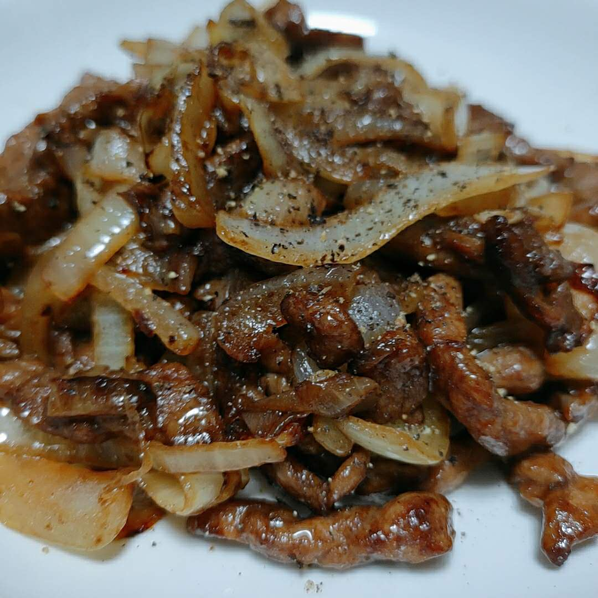
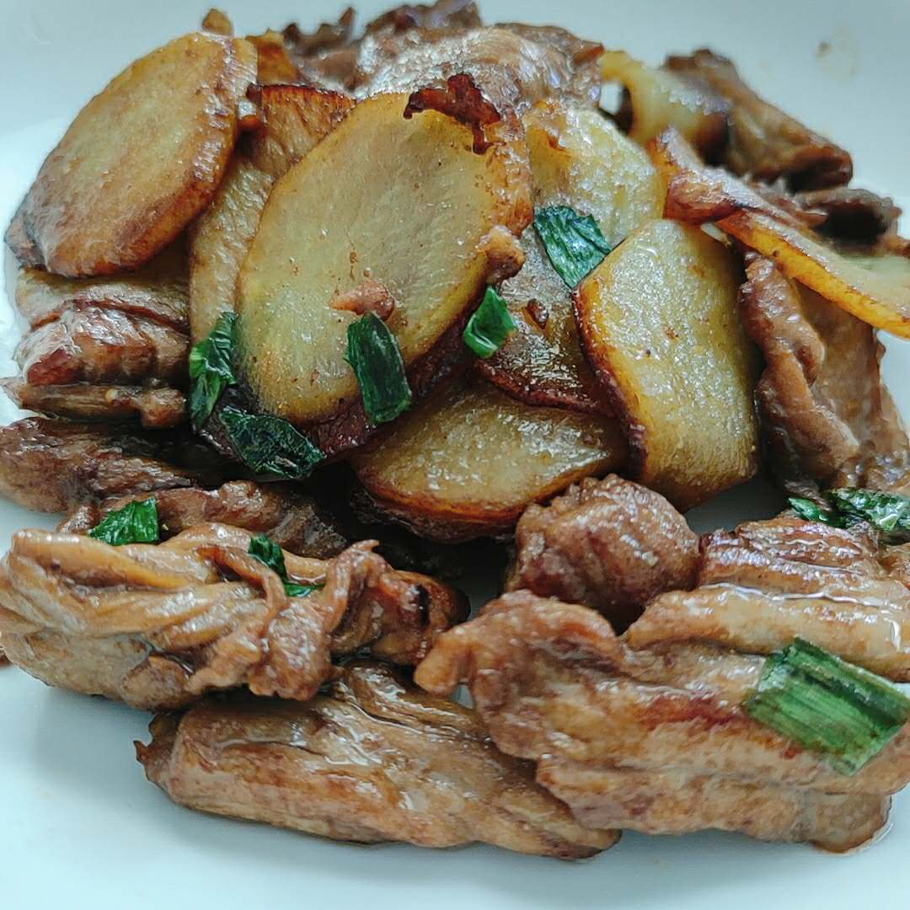

最开始是来自编辑的小声吐槽
作者在投稿后发现原来 markdown 的排版很不适合这种文风，就用她熟练的 push 前端工程师的技巧强迫编辑在半夜魔改 CSS。
但至少是又有一个新的栏目开起来了，希望能保持周更或者双周更吧，并坚持到 sfgg 不会饿死为止。
下面是原文 ->
初次见面
这里是 Miu，建完人物先打一波 Tag：
- 专业废柴：以 NEET 为人生目标
- 职业画师：累计收入 20 软妹币
- 业余厨娘：我的阿崽还没被喂死
这里呢会分享一些食谱，偏好易上手的简单菜，擅长偷工减料。
适合人群：什么都吃的人、拥有什么都吃的 NumPY 的人。
插画师是本人，
插画不接受差评。
关于这道菜
记得刚到北京和阿崽一起生活的时候，我还不会做几个菜，炒肉类的菜完全没有认真做过。
但阿崽呢又是一个特别爱吃肉的家伙，于是乎就让阿崽点菜，对着菜谱买材料、试着去做。
毕竟阿崽说过，不管我做什么都会吃完的。
青椒炒肉就是阿崽早期点的菜之一，我做的第一份青椒炒肉就是给阿崽吃的。
我大抵是有那么一丝天赋的，我记得我第一次做的青椒炒肉就还行，加上炒肉用纯瘦肉我这种不爱沾半点肥肉的人也能吃，它就经常出现在我家餐桌上了。
我做过肉炒的太柴让阿崽好好锻炼了一把咬肌的，也做过没炒熟又回锅的；做过咸了贼下饭的，也做过淡了又泼了点酱油补救的。
也逐渐变化出了很多花样，非叶类菜拿来炒肉都挺不错，偶尔突发奇想加些孜然/胡椒/椒盐调个不同的风味也挺不错。
都能吃，甚至偶尔挺好吃，收到的夸奖多，批评少。
毕竟阿崽不会做饭，也知道要是自己逼逼太多我这种经不起批评的人罢工了，他就该饿死了。


「青椒吃完了，下次做的时候如果我还记得再补图吧」
食材清单
| 材料 | 说明 | 用量 |
|---|---|---|
| 青椒 | 可更换为尖椒彩椒等各种椒、洋葱 | [0,吃饱]，建议约等于肉的体积 |
| 瘦肉 | 常用猪通脊，其它几乎纯瘦的猪肉部位都行 | (0,吃饱]，建议200g左右 |
| 生抽 | 我爱死生抽了！咸鲜味很舒服 | 中餐精髓适量 |
| 老抽 | 上色，不放肉炒完偏白不好看 | [0,适量] |
| 料酒 | 去腥，应该也会软化一些些肉 | [0,适量] |
| 蚝油 | 提鲜，咸味，微甜 | [0,适量] |
| 盐 | 提供咸味 | [0,适量] |
| 淀粉 | 锁住肉的水分 | [0,适量] |
| 食用油1 | 腌肉用，据说能让肉下锅易滑散 | [0,适量] |
| 食用油2 | 炒菜怎能不放油 | 适量 |
步骤总结
- 切肉丝
- 腌肉丝
- 切青椒
- 炒青椒
- 炒肉丝
- 青椒炒肉丝
步骤详解
首先将瘦肉切丝放入小碗中，
猪肉顺着纹理切会比较嫩「不切断纹理」，切错了也没事这玩意儿不容易炒老。
直径(0,1)cm，推荐0.5cm，长度随意，推荐5cm。
插画师罢工啦摸过瘦肉手还是会有点油，此时可以清洗一下油呼呼的爪子、砧板以及刀。
取一双筷子开始清爽的腌肉。
加入适量生抽、料酒、盐、蚝油「除生抽均可省略」，搅啊搅。
加入适量的淀粉，搅啊搅。
加入适量的油，搅啊搅。「此步骤可省略」
肉丝升级成腌肉丝，放旁边吧。
插画师罢工啦掏出青椒，竖切开，掏空籽，切成和肉丝差不多的青椒丝。
插画师罢工啦起一口不粘锅「铁锅也行，但擅长使铁锅还不会粘锅的人大抵是不会看我的傻屌菜谱的」
中火，到油，烧热「随便烧会儿，油温不重要，别烧炸了都行」下青椒丝。
炒啊炒，炒啊炒，炒到接近你喜欢的软度「本人喜欢软乎乎的，爱吃生的同学甚至可以不先炒青椒」
就可以装盘子里啦，锅够大的同学拨到锅边上也行。
插画师罢工啦还是那口锅，火都不用关，加点油。
下肉丝，开始疯狂搅拌，直到表面基本全变色「别有强迫症！差不多得了」
青椒丢回去，炒啊炒差不多1-2分钟肉就该熟了。
挑一根最粗的肉丝咬一口，截面没有粉红色就熟了。
如果有粉红色……那就再炒一会儿重复上述步骤。
插画师罢工啦同时你会尝到肉丝的味道，够不够咸，不够咸就再撒点盐。
出锅吃吧，你会发现配料加不加，加的多少并不会太影响味道和软嫩度，都好吃。
技术总结
- 猪肉嫩，顺着纹理切「不切断纹理」，切错了也没事这玩意儿不容易炒老。
- 能切均匀尽量切均匀，大家一起熟，切不均匀还能咋滴也没关系。
- 先把肉腌制上再切蔬菜，这样就不用蹲在厨房边打游戏边等肉腌制了。
- 肉丝变色了和青椒一起炒一会儿就熟啦，不放心就挑根最粗的咬一口看看。
- 炒太久容易炒老，老了不想吃就给 NumPY 吃吧。
- 淡就最后加盐能补救，太咸齁的话，给 NumPY 吃吧。